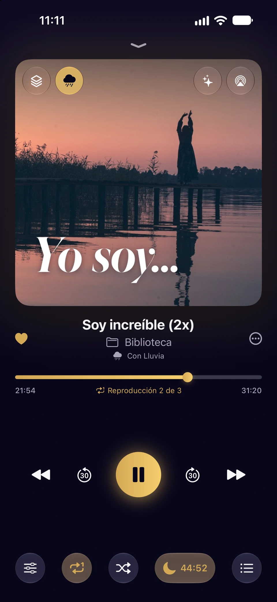
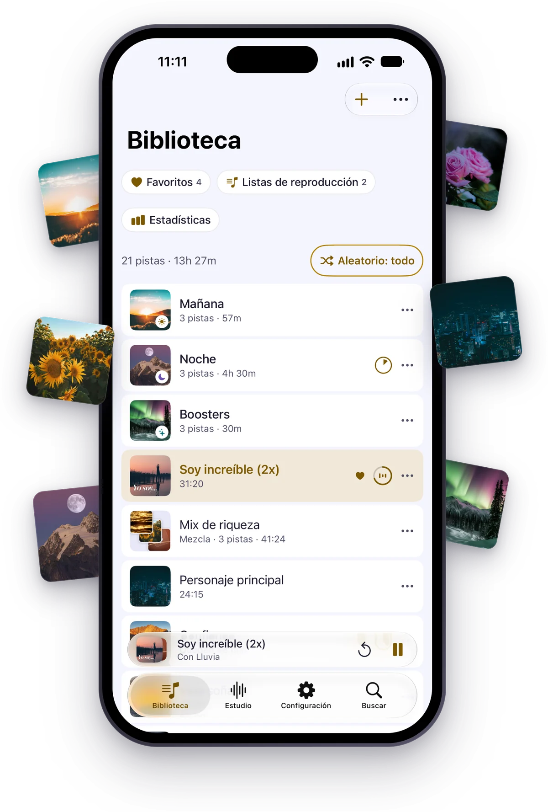
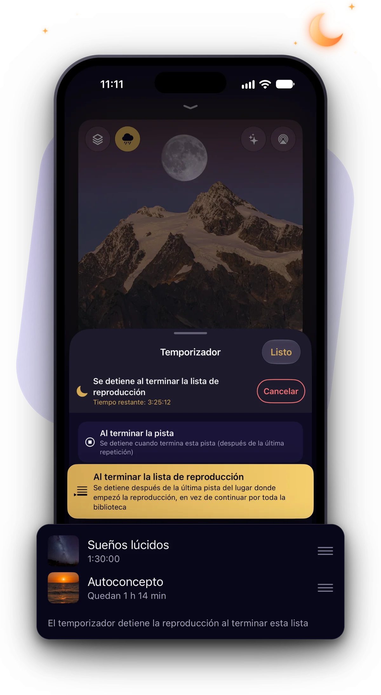
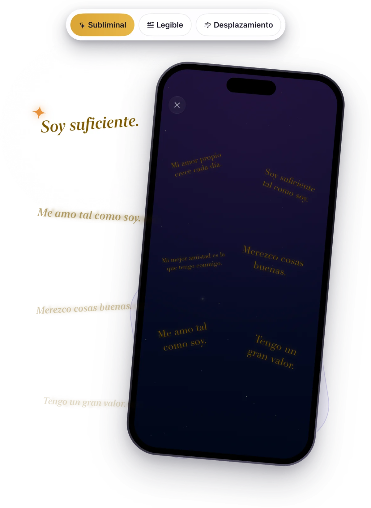
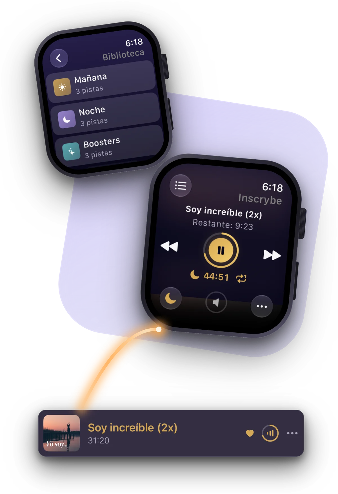
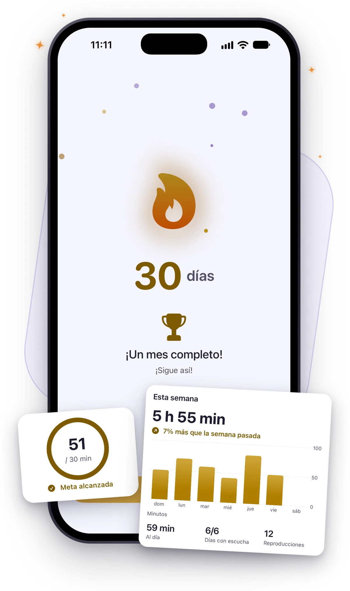
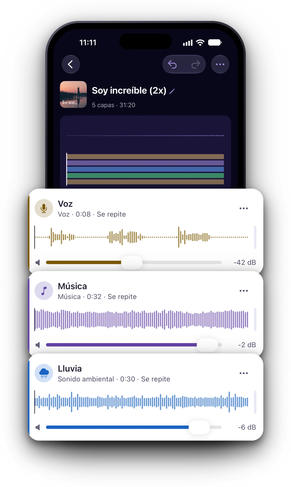
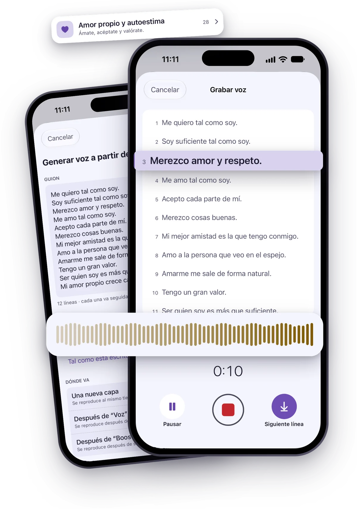
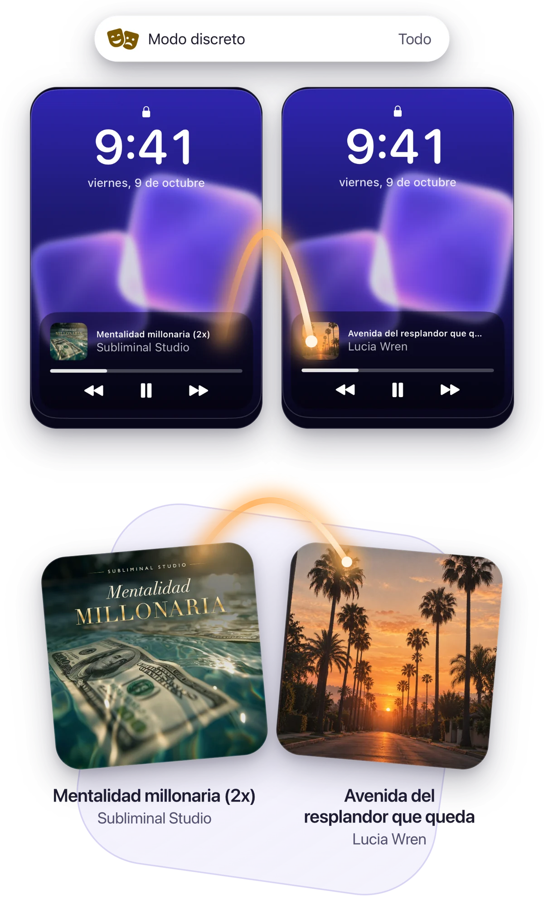
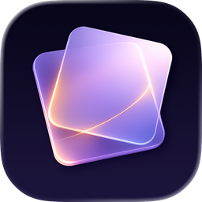

Reproduce tus subliminales. Crea los tuyos.
Reproduce tus subliminales y crea tus propios audios midiendo qué tan oculta está cada voz. Repite una pista las veces que quieras y contrólala desde el Apple Watch.
Para iPhone, iPad y iPhone Duo

Todos tus subliminales en un solo lugar
Importa lo que ya escuchas: archivos, carpetas completas, ZIP, videos y enlaces. Las carpetas y las listas de reproducción suenan en el orden que decidas.
- Cualquier formato
- MP3, AAC, FLAC, WAV, Opus, Ogg, WebM, MKV, WMA y más, y el audio de un video.
- Repite las veces que elijas
- Pon una pista en bucle las veces que quieras y luego pasa a la siguiente o detente.
- Reproducciones por pista
- En una lista, cada pista puede sonar las veces que elijas.
- Volumen y velocidad
- Sube el volumen de las grabaciones que suenan bajo, y escúchalas más lento o más rápido.
- Mezclas
- Varias pistas a la vez como una sola, cada una con su volumen y su lado.
- Sonido de fondo
- Lluvia, mar o un tono binaural debajo de lo que escuches.

Duerme escuchando tus subliminales
Pon el temporizador por minutos o para que se detenga al terminar la pista, la carpeta o la lista. Al final el sonido se desvanece y la noche queda en silencio: no empieza el audio de otra app.
- A continuación
- Mira lo que queda de la noche y cámbialo solo por esta vez.
- Las pistas largas se reanudan
- Siguen donde las dejaste.

Mira tus afirmaciones mientras escuchas
Los Visuales muestran tus afirmaciones en pantalla mientras suena una pista, en destellos dentro de los límites de fotosensibilidad o fijas, sobre tu portada o una presentación con tus fotos. Guárdalos como video en Fotos.

Contrólalo desde tu Apple Watch
Tus subliminales donde escuches: la pantalla bloqueada, el Centro de control, los widgets, CarPlay, Siri y Atajos, AirPlay, y un control remoto en el Apple Watch con complicaciones.

Mantén viva tu racha
Las Estadísticas muestran tus horas, una meta diaria y tu racha, con tu semana, tus meses y años, tus récords y cuándo escuchas.

Combina tu voz con música
Con el Estudio creas subliminales como lo haría un profesional: tu voz sobre música, lluvia o un tono binaural, en capas que ajustas clip por clip.
- Capas de clips
- Cada uno con su inicio, pausas, repeticiones, desvanecimientos, volumen, lado, velocidad y tono.
- Sonidos integrados
- Lluvia, mar, bosque, fuego y ruido, y tonos binaurales de delta a gamma (con audífonos o auriculares).

- Voz silenciosa
- Sube una voz por encima de lo audible para subliminales silenciosos, con una comprobación antes de guardar.
- Guardar en la biblioteca
- Como AAC, WAV, MP3 o Apple Lossless. Edita el proyecto y guárdalo otra vez para reemplazarlo.
Graba o da voz a tus afirmaciones
Graba línea por línea con tu guion en pantalla y una cuenta regresiva, y vuelve a grabar cualquier línea. O usa Generar voz para leer en voz alta un guion escrito con las voces de tu dispositivo y tus pronunciaciones.
- La Biblioteca de afirmaciones
- Afirmaciones listas por categoría, en primera persona, en segunda o con un nombre.
- Mis grabaciones
- Cada toma que guardas, en todos tus dispositivos.

Mantén en privado tus subliminales
El Modo discreto muestra nombres y portadas inventados en la pantalla bloqueada, en CarPlay, en los widgets y en el Apple Watch. Ocultos es una colección con su propio bloqueo, y el Bloqueo de la app abre Inscrybe con Face ID, Touch ID o un PIN.
- Sin analíticas
- Nada registra cómo usas la app. Los informes de errores nunca incluyen tus pistas ni tus guiones, y puedes desactivarlos.
- Sincronización con iCloud
- Tu biblioteca, tus proyectos y tus grabaciones en todos tus dispositivos, en tu propio iCloud.


Inscrybe
Inscrybe ya está en el App Store para iPhone, iPad y iPhone Duo, con CarPlay y Apple Watch.
Para iPhone, iPad y iPhone Duo
Ayuda
Respuestas a lo que más nos preguntan. Para cualquier otra cosa, escríbenos.
Escríbenos
Cuéntanos qué estabas haciendo cuando pasó y qué iPhone o iPad usas.
Desde la app: Configuración › Contacto. Con Incluir información del dispositivo activado, tu mensaje lleva los datos que ayudan a encontrar un error, nunca tus pistas ni tus guiones.
Escuchar
¿Cómo agrego mis subliminales a Inscrybe?
En la Biblioteca, toca + y elige Importar archivos, Importar carpeta o Importar desde un enlace. También puedes abrir un archivo de audio en Inscrybe desde Archivos, AirDrop o el menú Compartir. El enlace tiene que llevar directo al archivo; no se admiten servicios de streaming.
¿Cómo repito una pista un número de veces?
En el reproductor, toca Repetir y, en Repetir esta pista, elige cuántas veces o Personalizado…. Con Luego reproducir a continuación activado, después de la última vez suena la siguiente pista; si no, la reproducción se detiene ahí.
¿Cómo funciona el temporizador?
Toca la luna en el reproductor y elige una duración en minutos, Al terminar la pista, Al terminar la carpeta o Al terminar la lista de reproducción, según lo que esté sonando. Al final, el sonido se desvanece.
¿La app del Apple Watch reproduce audio?
No. Es un control remoto de tu iPhone: muestra lo que suena, controla la reproducción y el temporizador, y abre tu biblioteca y tus listas. El audio suena en tu iPhone.
El Estudio
¿Qué mide Nivel de voz?
Nivel de voz compara cada voz de un proyecto con la música y los sonidos que suenan encima y te dice dónde está: Nítida, Murmullo, Tenue, Oculta o Enterrada. Toca un nivel y el volumen de la voz se ajusta para llegar a él. Es una estimación, así que con ¿Puedes oírlo? lo compruebas con tus oídos.
¿Cómo guardo un proyecto como pista?
En el proyecto, toca Guardar en la biblioteca y elige el formato. Si lo guardas otra vez después de editarlo, Inscrybe te ofrece reemplazar esa pista y conservar sus reproducciones y su lugar en tu biblioteca.
Privacidad
¿Qué cambia el Modo discreto?
Una pista disfrazada muestra un nombre y una portada inventados en Inscrybe y fuera de ella: en la pantalla bloqueada, en CarPlay, en los widgets, en el Apple Watch, en Siri y en los nombres de los archivos que compartes. Actívalo en Configuración › Privacidad › Modo discreto, para Elementos privados o Todo. Mostrar nombres reales muestra los reales dentro de Inscrybe hasta que sales de la app.
Olvidé el PIN del Bloqueo de la app.
En la pantalla de bloqueo, toca ¿Olvidaste el PIN? y vuelve a entrar con el código de acceso de tu dispositivo o con tu código de recuperación, según lo que elegiste al activar el Bloqueo de la app.
¿Qué datos recopila Inscrybe?
Inscrybe no tiene analíticas: nada registra cómo usas la app. Si se cierra inesperadamente, se envía un informe sin los nombres de tus pistas, tus guiones ni información sobre ti. Desactiva Compartir informes de errores en Configuración › Privacidad para no enviar ninguno.
Tu cuenta
¿Cómo uso Inscrybe en todos mis dispositivos?
Activa Configuración › Sincronización con iCloud en cada dispositivo con la misma cuenta de Apple. Tu biblioteca, tus listas, tus proyectos y tus grabaciones se sincronizan en tu propio iCloud, y el audio se descarga cuando suena.
¿Cómo restauro mi suscripción en un dispositivo nuevo?
En Inscrybe, abre Configuración y toca Restaurar compras, con la cuenta de Apple con la que te suscribiste.
¿Cómo cambio o cancelo mi suscripción?
En Inscrybe, abre Configuración y toca Administrar suscripción, o ve a la app Configuración, toca tu nombre y luego Suscripciones. Apple se encarga de los cobros.